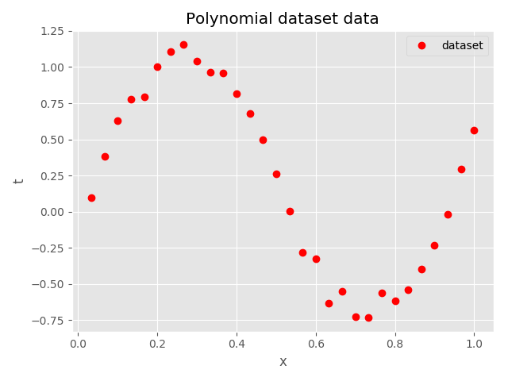
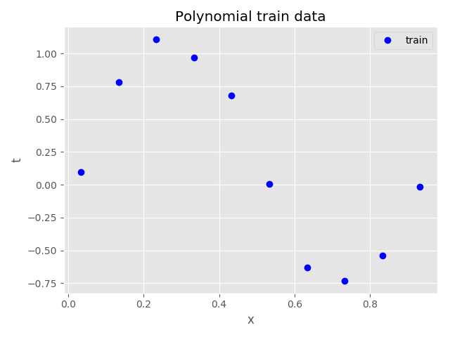
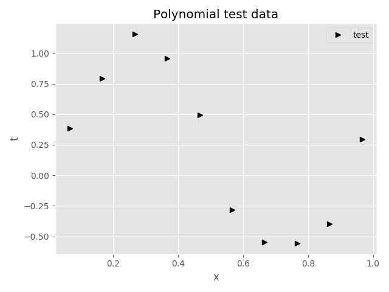
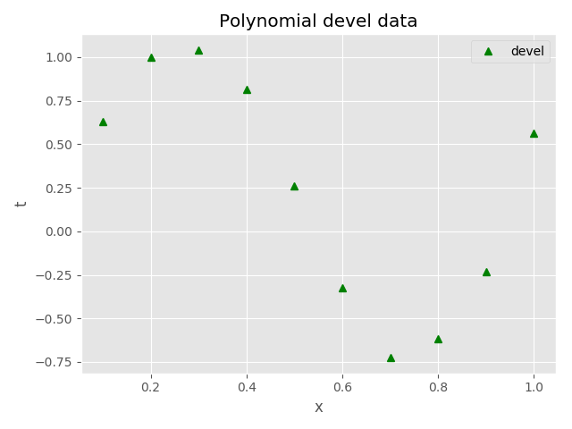
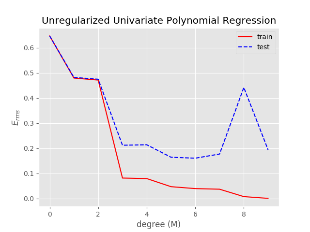
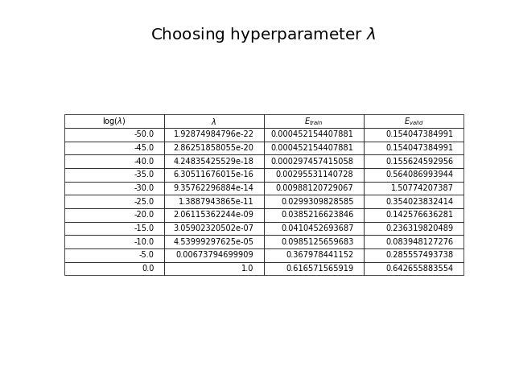
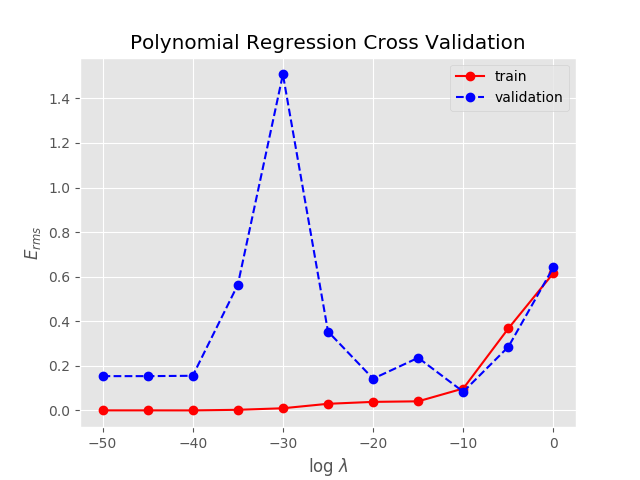

Polynomial Regression¶
In this question we fit the polynomial regression with and without L2 regularization (Ridge Regression).
The input data is noisy sinusoidal curve generated using the formula
Where epsilon varies from 0 to 0.005 with Gaussian mean zero and variance 0.005.
There are initially samples generated, however, they are broke into 3 equal parts: 10 in train.txt, 10 in test.txt and rest of 10 in devel.txt.
In the polynomial regression we find hyperparameter Lambda from cross-validation set devel.txt, weight vector w from train.txt and we finally fit the data test.txt.
Note that all the data we used train.txt, test.txt, and devel.txt comes from the same distrubution function (for example simpel gaussian sample here.).
The output of running the program polyfit.py is given below.
Outputs:
############################################################
Ridge Regression:
Degree of polynomial M = 9
log(lam) lam E_train E_valid
-50.00 1.92875e-22 0.00071043706916 0.15294137335788
-45.00 2.86252e-20 0.00071043706916 0.15294137335788
-40.00 4.24835e-18 0.00023951892261 0.15535124412418
-35.00 6.30512e-16 0.00297491558846 0.56445443004290
-30.00 9.35762e-14 0.00988120783719 1.50774354934759
-25.00 1.38879e-11 0.02993098285872 0.35402378737031
-20.00 2.06115e-09 0.03852166238462 0.14257663582101
-15.00 3.05902e-07 0.04104526936869 0.23631982048812
-10.00 4.53999e-05 0.09851256596825 0.08394812727602
-5.00 6.73795e-03 0.36797844115190 0.28555749373793
0.00 1.00000e+00 0.61657156591915 0.64265588355401
------------------------------------------------------------
-10.0 4.53999e-05 0.08394812727602
##################################################
Comparison of regularized and unregularized cases:
Test RMSE without regularization for M = 9: 0.1612.
Test RMSE with regularization for M = 9: 0.1241.
I have plotted several plots. Which are given below.
      